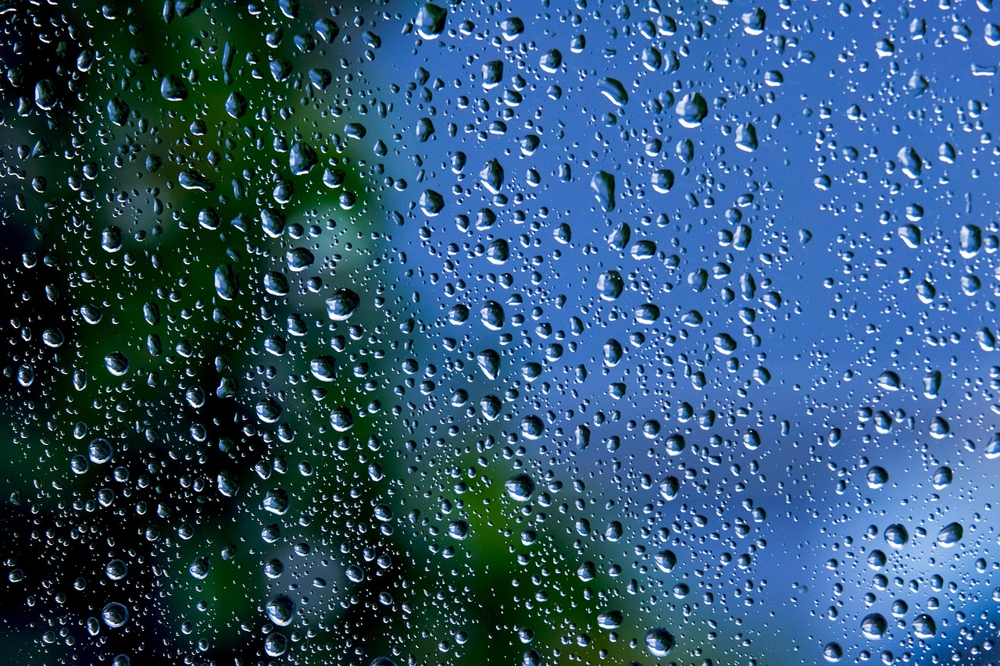

The combination of telescoping carbon fiber poles and deionized water has revolutionized the window cleaning industry, making high-access work safer and more efficient.
A water-fed pole (WFP) system is a professional window cleaning method that uses a telescoping pole with a specialized brush at the end. Pure deionized water is pumped up the pole and through jets in the brush, allowing the operator to scrub and rinse windows from the safety of the ground.
Unlike traditional methods that rely on ladders, squeegees, and detergents, WFP systems rely on the chemical purity of DI water to act as a solvent, absorbing dirt and drying without leaving any mineral deposits behind.
A complete pure water cleaning setup typically consists of four main parts:
Water-fed pole systems offer three major advantages over traditional squeegee work:
Proper WFP cleaning follows a two-stage process. First, the glass is scrubbed thoroughly with the brush and pure water to agitate and suspend dirt. Second, the brush is lifted slightly or the angle is changed to provide a final rinse with pure water, washing away all suspended particles. The window is then left to air dry naturally.
Standard professional poles typically reach 30 to 45 feet (3-4 stories). Advanced carbon fiber poles can extend up to 70+ feet, though they require more skill and strength to manage at those heights.
No. Deionized water is "hungry" water—it naturally attracts and dissolves dirt. Using soap with a WFP system actually creates more work because you would have to rinse the glass much longer to remove the chemical residue.
For heights under 25 feet, fiberglass or hybrid poles are cost-effective. For heights above 30 feet, carbon fiber is essential because it is lighter and much more rigid, preventing the "wobble" that makes high cleaning difficult.
Technically yes, but the windows will dry with mineral spots. To get the "spot-free" benefit that makes the system worthwhile, you must use water with a TDS reading under 10 ppm (ideally 0 ppm).
This depends on your local tap water's TDS. If your tap water is 50 ppm, a single 1/2 cubic foot DI tank might last 1,500 gallons. If your tap water is 300 ppm, that same tank might only last 250 gallons.